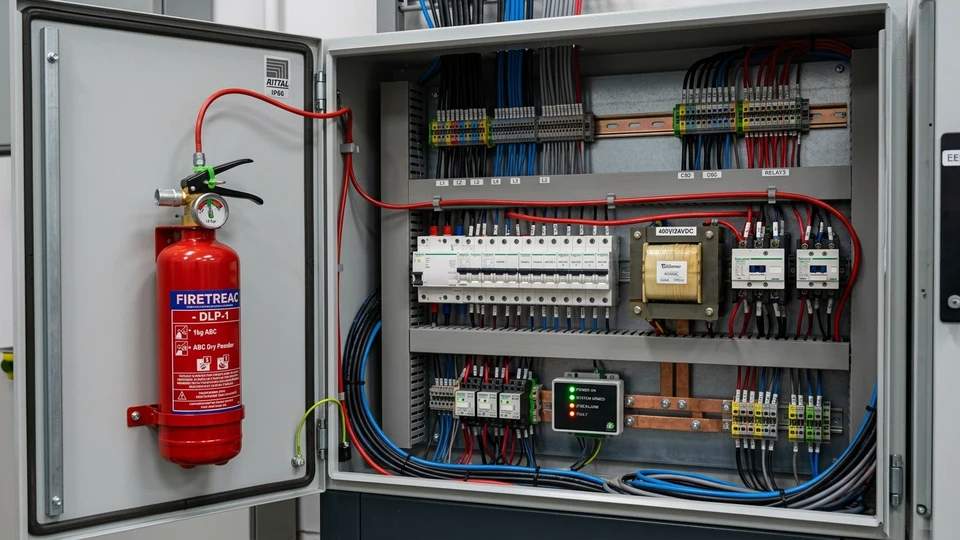

Pano İçi Otomatik Söndürme Sistemi (Doğrudan & Dolaylı)
Elektrik kaynaklı yangınları henüz pano içindeyken, bina yangın algılama sistemleri dahi fark etmeden 3 ila 5 saniyede kaynağında durduran polimer algılama hortumlu mikro teknoloji.

3 SANİYEDE KAYNAĞINDA MÜDAHALE · ELEKTRİK AKIMI İSTEMEZ · TAM OTOMATİK
Sisteme Genel Bakış ve Koruma Prensibi
Sanayi tesisleri, oteller, veri merkezleri ve ticari binalardaki yangınların %30'dan fazlası elektrik dağıtım panolarındaki aşırı yük, gevşek klemens bağlantıları veya kısa devre arklarından kaynaklanır. Pano İçi Otomatik Söndürme Sistemi, bu tehlikeyi tüm odaya veya binaya yayılmadan önce doğrudan panonun içinde yok etmek üzere tasarlanmış mikro bir mühendislik çözümüdür.
Sistemin kalbinde özel polimer alaşımlı, ısıya duyarlı algılama hortumu (Detection Tubing) yer alır. Pano içerisindeki kablo yollarına ve bara bağlantılarına yakından döşenen bu hat, 110°C ile 170°C arasında bir sıcaklığa maruz kaldığında alevin tam merkezinde mikro bir delik açarak patlar. Doğrudan (Direct) sistemde gaz bu delikten alevin üzerine püskürürken; Dolaylı (Indirect) sistemde açılan hat ana vanayı tetikleyerek paslanmaz nozullardan tüm panoyu temiz gazla doldurur.
Hiçbir elektrik beslemesine, pile veya harici algılama santraline ihtiyaç duymayan tamamen pnömatik mekanik mimarisi sayesinde genel elektrik kesintilerinde bile %100 kesintisiz güvenlik sağlar. İçerisindeki FM200 veya Novec 1230 gazı sayesinde pano içindeki pahalı şalt ekipmanları hiçbir zarar görmez.
Nasıl Çalışır? — 4 Aşamalı Müdahale Döngüsü
Basınçlı esnek polimer boru pano içerisindeki tüm kritik kablo bağlantılarını ve şalt elemanlarını 7/24 temas mesafesinde izler.
Ark veya aşırı ısınma meydana geldiğinde boru en sıcak noktadan (110°C-170°C) delinerek basınç farkı yaratır.
Direct sistemde delikten doğrudan alev noktasına; Indirect sistemde ise nozullardan tüm pano hacmine saniyeler içinde gaz boşalır.
Alev 3-5 saniyede söndürülür, yangının komşu panolara veya odaya sıçraması tamamen önlenir ve alarm kontağı ana santrale iletilir.
Teknik Özellikler ve Tasarım Parametreleri
Öne Çıkan Avantajlar
- Yangını binaya yayılmadan ve bina dedektörleri algılamadan çok önce panonun içinde söndürür.
- Elektrik kesintilerinden, voltaj dalgalanmalarından veya batarya arızalarından bağımsız çalışır.
- Temiz gaz (FM200/Novec) kullandığı için kontaktör, PLC, inverter ve rölelere sıfır zarar verir.
- Üzerindeki basınç şalteri ile ana yangın alarm santraline veya BMS bina otomasyonuna kuru kontak bilgisi gönderir.
- Kompakt yapısıyla pano yanına veya içine kolayca monte edilir, zemin alanı işgal etmez.
- Mevcut aktif çalışan elektrik panolarına iş kesintisi yaratmadan hızla entegre edilebilir.
Kritik Uygulama Alanları
Uluslararası Standartlar & Mühendislik Desteğimiz
Fenix Yangın bünyesinde tasarlanan her sistem, uluslararası can ve mal güvenliği normlarına %100 uyumlulukla projelendirilir.
- NFPA 2001 (Standard on Clean Agent Fire Extinguishing Systems)
- ISO 14520 / EN 15004 Temiz Gaz Standartları Uyumlu Ekipman
- CE Basınçlı Kaplar Direktifi (PED 2014/68/EU)
- T.C. Binaların Yangından Korunması Hakkında Yönetmelik
- Elektrik Kuvvetli Akım Tesisleri Yönetmeliği Yangın Emniyeti
- ISO 9001 Kalite Yönetim Sertifikalı Üretim ve Montaj
Alternatif & Tamamlayıcı Sistemler
Sıkça Sorulan Sorular
+ Pano içi söndürmede Direct ile Indirect sistem arasındaki fark nedir?
Direct sistemde ısıyı algılayan polimer hortum alev noktasında delinir ve söndürücü gaz doğrudan bu minik delikten alevin kaynağına fışkırır (küçük ve orta ölçekli panolar için idealdir). Indirect sistemde ise polimer hortum sadece tetikleyici olarak çalışır; patladığında vana açılır ve gaz çelik boru hattı ile nozullardan panonun tamamına homojen olarak boşalır (büyük ve çok bölmeli panolar için uygundur).
+ Elektrik panosu yangınında tozlu veya sulu söndürme neden kullanılmaz?
Kuru kimyevi toz pano içerisindeki tüm hassas kartları ve kontaktörleri aşındırır, iletken tortu bırakarak panoyu tamamen kullanılamaz hale getirir ve haftalarca süren fabrika duruşuna yol açar. Su ise yüksek voltajda ölümcül kısa devreler ve ark patlamaları yaratır. Pano içi temiz gaz sistemleri ise yangını anında söndürür ve panoyu sıfır hasarla çalışır durumda bırakır.
+ Polimer hortumun kullanım ömrü ve bakım ihtiyacı nedir?
Polimer tubing son derece dayanıklı malzemeden üretilmiştir ve normal çalışma şartlarında uzun yıllar elastikiyetini korur. Fenix Yangın olarak yılda en az iki defa silindir manometresi, hortum basıncı ve mekanik bağlantıların sızdırmazlık denetimini gerçekleştiriyoruz.
+ Sistem çalıştığında ana yangın santraline veya güvenliğe sinyal gider mi?
Evet. Vana üzerine entegre edilen basınç anahtarı (pressure switch) gaz boşalması veya hortum delinmesi anında kontak kapatarak binanın merkezi yangın alarm santraline, PLC panosuna veya işletme güvenliğine acil durum ikazı iletir.